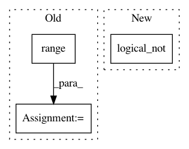

68fe96add85bd842df23569dde490e1694d256fe,cleverhans/model_zoo/deep_k_nearest_neighbors/dknn.py,DkNNModel,find_train_knns,#DkNNModel#Any#,134
Before Change
knns_ind[layer] = np.zeros(
(data_activations_layer.shape[0], self.neighbors), dtype=np.int32)
knn_errors = 0
for i in range(data_activations_layer.shape[0]):
query_res = self.query_objects[layer].find_k_nearest_neighbors(
data_activations_layer[i], self.neighbors)
try:
knns_ind[layer][i, :] = query_res
except: // pylint: disable-msg=W0702
knns_ind[layer][i, :len(query_res)] = query_res
knn_errors += knns_ind[layer].shape[1] - len(query_res)
// Find labels of neighbors found in the training data.
knns_labels[layer] = np.zeros((nb_data, self.neighbors), dtype=np.int32)
for data_id in range(nb_data):
knns_labels[layer][data_id, :] = self.train_labels[knns_ind[layer][data_id]]
After Change
knns_labels[layer] = np.zeros((nb_data, self.neighbors), dtype=np.int32)
knns_labels[layer].reshape(-1)[
numpy.logical_not(m1)
] = self.train_labels[
knns_ind[layer].reshape(-1)[
numpy.logical_not(m1)
]
In pattern: SUPERPATTERN
Frequency: 3
Non-data size: 3
Instances
Project Name: tensorflow/cleverhans
Commit Name: 68fe96add85bd842df23569dde490e1694d256fe
Time: 2019-06-21
Author: siarheisiniak@yahoo.com
File Name: cleverhans/model_zoo/deep_k_nearest_neighbors/dknn.py
Class Name: DkNNModel
Method Name: find_train_knns
Project Name: Qiskit/qiskit-aqua
Commit Name: 2aae12b10a3411009a2802a077bb8c6c0365b6ad
Time: 2020-08-28
Author: 31178928+t-imamichi@users.noreply.github.com
File Name: qiskit/aqua/operators/converters/abelian_grouper.py
Class Name: AbelianGrouper
Method Name: _commutation_graph
Project Name: interactiveaudiolab/nussl
Commit Name: d882543331fd9035746cc3e4115f4ad8ac119324
Time: 2017-08-08
Author: daniel.felixkim@gmail.com
File Name: nussl/separation/duet.py
Class Name: Duet
Method Name: _compute_masks